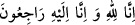

84. Yüzünü onlardan çevirdi, “Ah Yûsuf’um ah.” diye sızlandı ve üzüntüden
gözleri ağardı. Artık yutkunuyor da yutkunuyordu.”
Yâkuboğullarından duyduğu sözlerden hoşlanmayarak “yüzünü onlardan çevirdi.”
Kâşifî şöyle der: “Yâkub (a.s.) son derece kederlenip hüzünler evine Yûsuf’un
kaybolmasından sonra inşa ettirip bu ismi verdiği eve yöneldi.”
Câmî şöyle der:
Ey arkadaş, sen git dostlarla eğlence meclisinde hoşça yaşa
Beni terk et ki bu hüzün evinde yalnız kalıp öleyim
“Ah Yûsuf ’um ah” diye sızlandı” “__WORD__”, hüzün ve hasretin daha şiddetli hâlidir.
Bu sözü ile Yâkub (a.s.): “Ey benim tasam! Haydi gel, şimdi tam senin zamanın”
diyerek tasasını çağırmaktadır.
Câmî der ki:
Eğer Yûsuf gibi birden kaybolursan
Yâkub gibi bize “yâ esefâ” demek düşer
Hâfız ise şöyle der:
Benim aziz Yûsuf ’um gitti ey biraderler, bana acıyın
Onun gamından Kenanlı ihtiyarın hâlini tuhaf görüyorum
Hâdise Yûsuf’un iki kardeşinin, yâni Bünyamin ve onunla birlikte Mısır’da kalanın
başına gelmiştir. Yeni meydana gelen bir şey nefse daha fazla acı verir. Buna rağmen
Yâkub (a.s.) Yûsuf için esef etmektedir. Bunun sebebi, Yûsuf’un gidişine duyduğu
esefin hâlâ devam ettiğini göstermek ve aradan ne kadar süre geçmiş olursa olsun,
bunun kendisi açısından hâlâ taptaze ve canlı olduğunu anlatmak, bütün bu musîbetlerin
temelinde Yûsuf’un başına gelenlerin yattığını göstermektir. Ayrıca iki kardeşin hâlen
hayatta olduklarını, hatta nerede yaşadıklarını kesin olarak bildiği ve döneceklerine
ümid beslediği halde, Yûsuf’a kavuşma konusunda Allah’ın fazl u rahmetinden başka
bir ümidi olmadığı için Yûsuf’un yokluğuna esef etmektedir.
Bir hadiste şöyle buyrulur: “Birinin ölümü üzerine söylenen “ __WORD__
(Şüphesiz biz Allah’a âidiz ve yine O’na döneceğiz.) ifadesi Muhammed ümmetinden
başka hiçbir ümmete verilmemiştir.”[76] Görüldüğü üzere Yâkub (a.s.) başına gelen
musîbetler karşısında böyle dememiş, “Ey Yûsuf üzerindeki tasam/Ah Yûsuf’um ah!”
demiştir.
Ebû Meysere’nin şöyle dediği rivâyet edilir: “Şâyet Allah benim cennete girmemi
nasîb ederse ebeveynine yaptıklarından dolayı Yûsuf (a.s.)’a çıkışacağım! Gam ve
kederini teskin etmek için babasına tek satır bir şey yazarak durumunu bildirmemiş!”